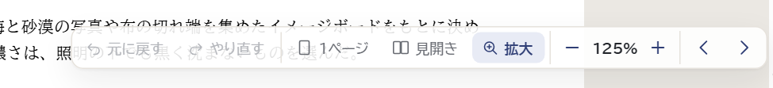
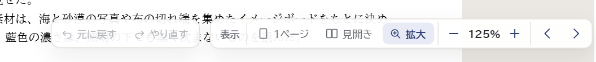
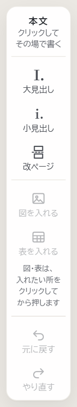
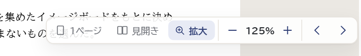
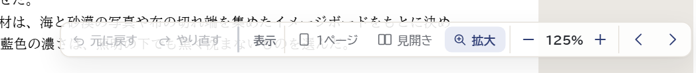

右下の帯に、原稿を戻す「元に戻す」「やり直す」と、見え方を変える道具（1ページ・見開き・拡大・－ ％ ＋・‹ ›）が並んでいます。表示を戻すつもりで「元に戻す」を押すと、直前に書いた字や入れた図が消えます。下は、125% にしたときの画面の下の所です。
細い線で区切っているだけ

左に「元に戻す・やり直す」、少し離して右に「表示」の帯。場所は今とほぼ同じなので、慣れた人も迷わない

書く道具（大見出し・図を入れる…）と一緒に。右下は表示だけになる。低い画面（1280×586 など）では、左の道具が窮屈になる（前にこの理由で右下へ移した）


区切りを少し太くし、表示の道具の前に「表示」。変わり方は小さい

どの案も、「元に戻す」にマウスを乗せたときの説明（Ctrl+Z）は今のまま出します。